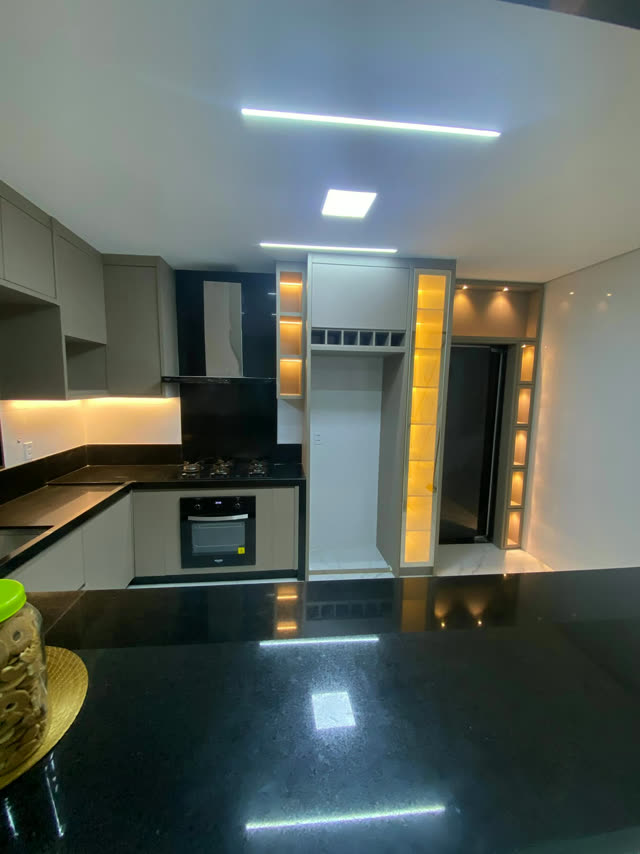

O que observar
1. Projetos entregues, não só imagens 3D
Imagens 3D mostram uma ideia. Fotos de obras prontas mostram o acabamento de verdade: portas alinhadas, bordas bem fechadas, encontros com a parede. Peça fotos de projetos parecidos com o seu e olhe o Instagram e as avaliações no Google.
2. Quem fabrica
Algumas empresas vendem o projeto e encomendam a produção de terceiros. Uma marcenaria com fábrica própria controla o corte, o acabamento e o prazo, e responde diretamente se algo precisar de ajuste.

3. Medição no local
Um valor final sério só sai depois que alguém mediu o seu imóvel. Desconfie de preço fechado feito só com a planta ou por foto.
4. Orçamento detalhado
O orçamento precisa dizer o material e a espessura da estrutura e das portas, o acabamento, o tipo de ferragem e o que está incluído: montagem, frete, iluminação. Só assim dá para comparar duas propostas. Os guias de preço de cozinha e de guarda-roupa mostram o que conferir.
5. Prazo e garantia por escrito
Combine o prazo de produção, a previsão de montagem e a garantia no papel. Veja o que influencia o prazo.
6. Quem vai acompanhar a obra
Saiba com quem você vai falar depois de assinar. Quando quem fez o orçamento acompanha o projeto até a montagem, as decisões não se perdem no caminho.
7. Preço muito abaixo dos outros
Quando um orçamento sai bem mais barato, compare item por item. A diferença costuma estar em chapas mais finas, ferragens mais simples ou itens que ficaram de fora.
Perguntas para fazer antes de fechar
- Os móveis são fabricados por vocês ou por terceiros?
- Posso ver fotos de projetos parecidos que vocês entregaram?
- Qual material e qual espessura estão no orçamento?
- Quais ferragens estão incluídas?
- Montagem, frete e iluminação estão no valor?
- Qual o prazo, a partir de quando ele conta e qual a garantia?
- Com quem eu falo durante a produção e a montagem?
Como a EL trabalha
A EL é uma marcenaria com fábrica própria no Sol Nascente, em Ceilândia, há mais de 5 anos em Brasília e região. A equipe mede no local, desenha o projeto, produz na nossa fábrica e monta. O dono faz o orçamento e acompanha o projeto até a montagem. As fotos deste site são de projetos que entregamos.
Pedir orçamentoVeja mais sobre a nossa marcenaria em Brasília.